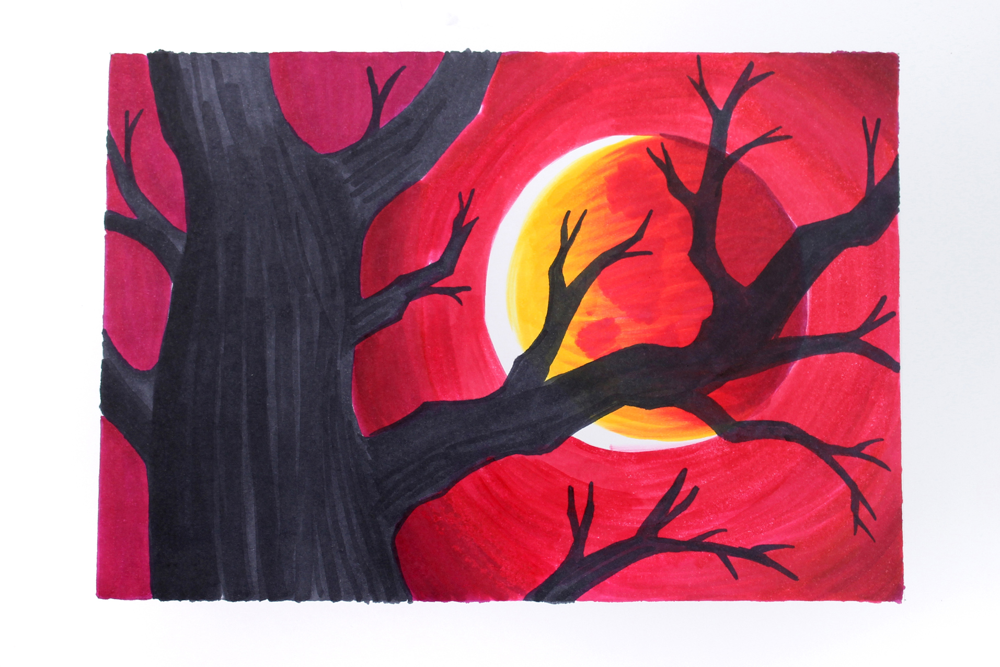

"The Boogeyman"
I don't know what I am anymore. The memory of what I wanted to be was long ago and was just a dream deferred. I tried my hardest to change, and I tried my hardest to be the best I could be, but some things
don't change. I hear the cries of their families and friends from the crowds, begging for mercy for the children, family, and friends. One part of me starts to feel pity and wish I hadn't done what I have
done, but the other half makes me laugh and smile, and I wish that it wasn't in me. My addiction only makes matters worse and every time I try to stop I find my way right back to it. A round world we live
in, huh? Ya, I was never good at making jokes. The kids at school used to say bad words at me, like retard or dumbass. Oh boy, did I show them. They're bodies hung from the hooks, like a stick tied to a
string, swaying in the wind. It was so fun and pleasurable to watch them scream that they're sorry, or that they can give me immense money if I let them free, but I wanted to show them what it was like to be
held down, as nobody in the world cares about you, so I did what needed to be done, to make things fair. I asked many girls on dates and that sort of thing. Not only did they reject me, but they publicly
humiliated me in front of everyone. I also took care of those people. I work in the shadows, it's where I was raised. The moonlight shines upon everyone's emotionless face, as I dance in the glimmering
light. Even though the moon is my only audience, I know that it won't bring joy, but that's why I sing in the first place. My mask reflects my mood during these times, a happy face with splashed blood on
it. I continue the hunt, I lose myself each time, and I can't control my instincts anymore. I'm being haunted by all the killings I've done. At night the thoughts keep consuming me leading me crying alone
at night where no one can hear me. I finally decided to save everyone, they all think I'm crazy and I can't do anything to them like they're immortal or something. I killed one of them and they know better
now. But, to save everyone, I killed myself, no one will find my body, and I just wanted to write my sins. Goodbye. I tried my own life that night. Something in me didn't let it happen. It was like some
force was keeping me alive, so others could suffer. I was so confused, but I continued to kill none the less. I have adapted this technique where I mutilate the bodies and hang them for everyone to see.
It makes me feel more powerful, in a horrific sort of sense. I got used to this, and it started to feel dull. I felt like everyone was getting used to the mass killings, but in reality, they weren't. I
started bizarre desires each day I went from raping to eating them. Once a small girl caught me devouring a man, so slowly and quietly. You could only hear the sound of flesh rustling and chewing noises.
She saw me, so I had to do what came to my mind. Make her next. I look at myself every day and wonder how far I'll go. It's best to lock your doors at night because I'm moving a lot now, and I could enter
your town next. :) Im infamous across the world, everyone knows me, I’m almost like Jesus, except no one looks to me for hope. I’m a hated disgusting “thing,” not deserving to be called a person anymore. I
am so deformed and broken. I’ve given up, but its not me anymore whos controlling my physical appearance. It’s not me, it’s not me, it’s not me. IT’S ME. I try to lie to myself but I find myself screaming
and crying in pain and regret. The people from the past, I can’t recognize them but I know they were important to me. They all shame me and look at me with disappointment. It’s hard for me to sleep now. I GOT
TAKEN IN BY THE COP PEOPLE. YES. FINALLY IM FREEE. IM FREEE.
IM FREEEEEEEEEEEEEEEEEEEEEEEEEEEEEEEEEEEEEEEEEEEEEEEEEEEEEEEEEEEEEEEEEEEEEEEEEEEEEEEEEEEEEEEEEEEEEEEEEEEEEEEEEEEEEEEEEEEEEEEEEEEEEEEEEEEEEEEEEEEEEEEEEEEEEEEEEEEEEEEEEEEEEEEEEEEEEEEEEEEEEEEEEEEEEEEEEEEEEEEEEE
